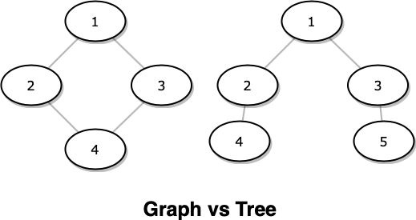

Let us deduce the problem of finding a minimum spanning tree from a given graph. First we need to understand how a tree differs from a graph, and what "minimum spanning" actually means.
A graph is a set of nodes and edges. A tree is a set of nodes and edges with no cycles. That single constraint — no cycles — is what separates the two.

Graph vs Tree — the only difference is the absence of cycles
If a tree cannot contain cycles, then converting a graph into a tree means removing edges that form cycles. For a minimum spanning tree we keep only the lowest-weight edges and discard any edge that would close a cycle. This greedy strategy is the essence of Kruskal's Algorithm.
Tap the canvas below to simulate a minimum spanning tree:
Kruskal's Algorithm
The steps are straightforward:
- Sort all edges in the graph by weight (ascending).
- Pick the next edge in sorted order.
- If including that edge creates a cycle — discard it. Otherwise, include it in the MST.
- Repeat until all edges have been considered.
The only abstract piece left is: how do we detect whether including an edge creates a cycle? The answer is the Union-Find (Disjoint Set Union) data structure.
Union-Find
Union-Find maintains a collection of disjoint sets. The find operation returns the root
(representative) of a set. The union operation merges two sets. To check for a cycle,
we check whether both endpoints of an edge share the same root — if they do, adding the edge would
create a cycle.
Suppose there are 5 nodes: 0, 1, 2, 3, 4. We perform the following union operations:
At each step, find(x) walks the chain until it hits -1 (the root).
When two endpoints have the same root, they are already connected — adding the edge between them
would form a cycle, so we skip it.
After applying these steps to all edges (in weight order), what remains is the minimum spanning tree.